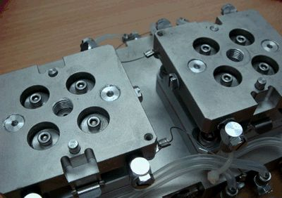
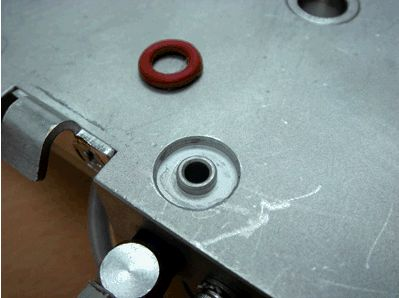
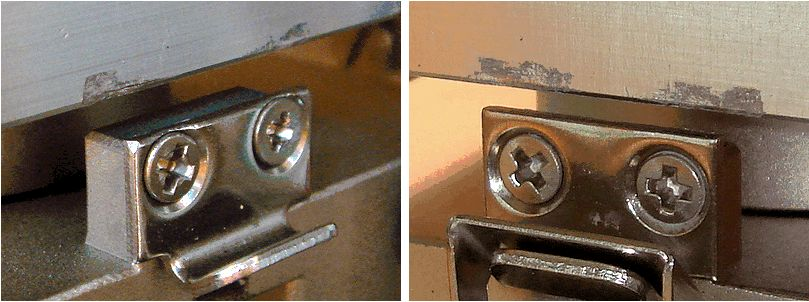
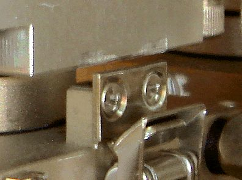
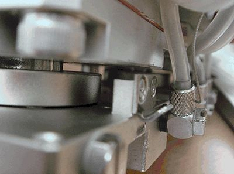
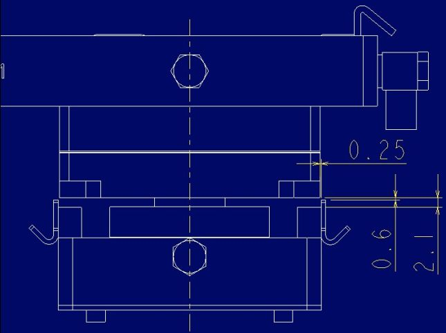

Service History
Subject: Retrofit kit issue on NS-7000
Handler Model: NS-7000
Controller: RC520
Date: 26 May 2008
Symptom
|
 1. Contactor base guide pin loosen causing alignment issue
|
|
 2. High missing silicon O ring incident due to fitting design. "usually after hot operation". Wrong o-ring type, should use dark blue or translucent type. |
|
 3. Protusion of takigen clip holder is obstructing compliance articulation movement causes damage to kit. |
|
 |
 |
|
|
4. Non standardization of takigen clip position is causes various damage across different retrofit kit design. |
||
Action
We have discussed with SEIKO EPSON and Knight Auto on the issues highlighted.
1. Loosen Guide Pin of Contactor Base
We will change the design of guide pin not eliminate this problem.
2. Missing O-ring
According to SEIKO EPSON, silicon glue must be kept putting onto O-ring not to be dried out. It must required for the performance of Retrofit Kit and also it should eliminate the problem that O-ring is come of out Contactor Base and missing.
We are afraid that we did not give you a clear instruction and this procedure have not been carried out properly.
Firstly, we will supply additional Silicon Glue with free of charge. We will appreciate if you keep attention to carrying out the procedure.
We will check with other customers if they are facing the same problem.
3. Retrofit Kit design
a) From your fact finding, we came to know there are 2 different design of Retrofit Kit in UTAC.
Per SEIKO EPSON, Retrofit Kit with thinner circular block between Cylinder and Press Base is original design.
In corporation with Knight Auto, we are investigating why 2 different design of Retrofit Kit exist, which should not be.
2) For your reference, attached please find referential drawing given by SEIKO EPSON.
a) There are 0.25mm of gaps for both sides between TKIGEN Latch and Cylinder.
b) As long as center position of Index Arm and Change Kit is accurate, TAKIGEN Latch do not hit onto Cylinder badly.
3) SEIKO EPSON’s study referring to your feedback,
a) As the scratch was caused during the production, center position of Index Arm is more than 0.25mm out from the correct position
b) Because of 3)-a), we suspect that TAKIGEN Latch hit on to Cylinder badly to have heavy scratch.
c) Our biggest concern is position of Index Arm itself. If it is out of the correct position, any modification on Retrofit Kit for the obstruction on Cylinder will not solve the problem causing damage on device, contact blade, etc.
4) Countermeasure
a) Per your request of May/23, we have modified cylinders for 5 sets of Retrofit Kit to have clearance for the latch.
b) Tomorrow, we are supposed to check Index Arm position of one of the NS-7000 causing this problem badly.
It should take about less than 1 hour. If possible, we would you can allow us to check several NS-7000 having the problem to find a fact.
c) We are checking drawing of Retrofit Kit. Also, we would like to do physical dimension check on your Retrofit Kit.

Cause